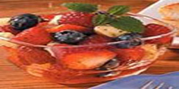

Плодова салата Продукти: * 2 банана, нарязани * 2 чаши пресни боровинки * 2 чаши пресни малини * 2 чаши нарязани пресни ягоди * 5 лъжици мед * 1 лъжица лимонов сок
Приготвяне: В голяма купа, комбинирайте бананите, боровинките, малините и ягодите. В по малка купа, смесете меда и лимоновия сок. Залейте плодовете с сместа.